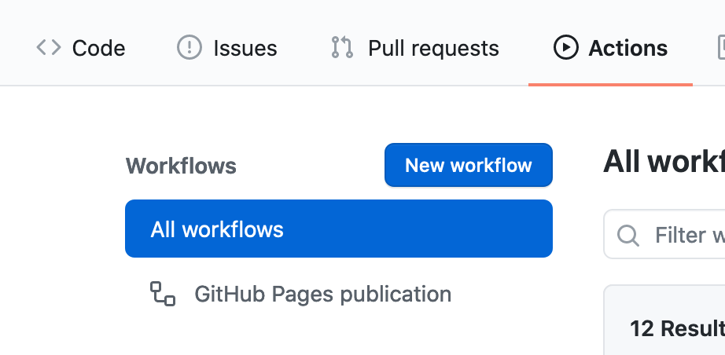
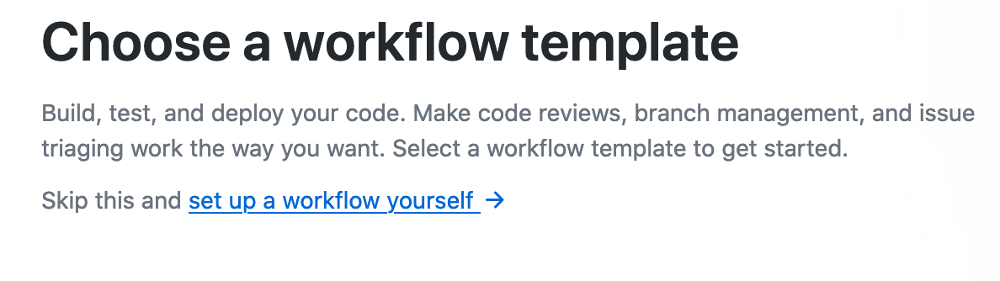
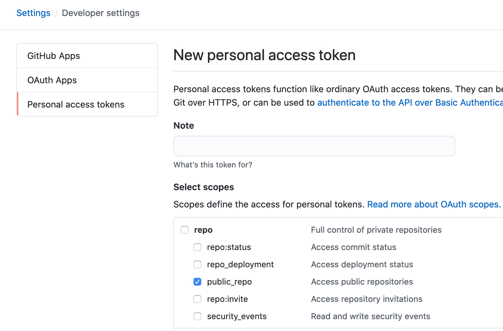
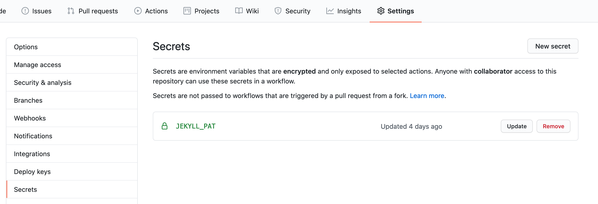

Pan Hyde
Tekst który czytasz, znajduje się na stronie postawionej na Jekyll’u i hostowanej na GitHubie, za pomocą darmowych Github Pages.
Tak w skrócie: Jekyll to silnik szablonów, zamieniający markdown na statyczne strony HTML, które potem można sobie hostować gdziekolwiek,
bo nie ma potrzeby podpinania bazy danych, czy obsługi PHP czy innego Pythona po stronie serwera.
Standardowy proces
Standardowy proces wrzucenia nowego posta wygląda następująco:
- piszę post w
markdownustawiając parametry takie jak tytuł, data czy tagi. - kiedy jestem zadowolony z tego co napisałem (nigdy), commituję zmiany i wrzucam na repozytorium na GitHubie, które nazywa się od mojego nicku
asvid.github.io - Github po pushu na branch
masterbuduje stronę HTML ze źródeł, korzystając z silnika Jekyll - czyli pewnie odpalajekyll build - to co, Jekyll wypluje, nie jest widoczne w repozytorium, ale po wejściu pod adres bloga jest widoczne jako statyczna strona WWW
Powyższy proces działa zupełnie automatycznie, nie trzeba nic konfigurować po stronie repozytorium czy GitHuba, wystarczy, że repozytorium nazywa się wg szablonu: {nazwa_użytkownika}.github.io.
I zwykle to wystarcza. Ale…
Zachciało się pluginów
Czasami chce się dodać coś fajnego na stronę. Mi zachciało się mieć ją po polsku i po angielsku. Jekyll natywnie tego nie wspiera… ale też nie uniemożliwia  Znalazłem więc plugin Polyglot, który daje mi możliwość mieć wiele języków na jednej stronie i robi to bez większego bólu ze zmianą struktury projektu czy konfiguracją.
Dodałem go do strony, po chwili zabawy zaczął troche działać. Po dłuższej chwili działał, jak chciałem. Lokalnie.
Znalazłem więc plugin Polyglot, który daje mi możliwość mieć wiele języków na jednej stronie i robi to bez większego bólu ze zmianą struktury projektu czy konfiguracją.
Dodałem go do strony, po chwili zabawy zaczął troche działać. Po dłuższej chwili działał, jak chciałem. Lokalnie.
Po wrzuceniu na Githuba niestety strona się posypała. Okazuje się, że Github nie buduje tak po prostu wszystkiego jak leci, ale ma whitelistę (pewnie niedługo zmienią tą nazwę…) pluginów, które wspiera. Polyglot nie ma na tej liście mimo starań autora. Sama idea whitelist’y jest zrozumiała ze względów bezpieczeństwa, nie chcemy, żeby GitHub padł, bo ktoś odpalił złośliwy plugin albo kopał bitcoiny na ich serwerach.
Ale ja chce ten plugin
Na szczęście da się ten problem rozwiązać. I to nawet na kilka sposobów. Najprościej jest zbudować stronę lokalnie i wrzucić zawartość na branch master a samą stronę rozwijać np. na branchu develop.
Jest też paczka do NodeJS, która publikuje aplikacje w NodeJS jako strony na GitHubie.
Ale że jestem leniwy i nie chce za każdym razem budować ręcznie i wrzucać na 2 branche źródeł i strony, i nie mam aplikacji na NodeJS, korzystam z 3 sposobu.
GitHub Actions
GitHub Actions to taki bardzo podstawowy CI dostępny za darmo na dla każdego repozytorium.
W ramach tego CI tworzymy sobie Workflows które w pliku yaml określają co i kiedy ma się zadziać. Dostępnych akcji jest cały katalog,
a jeśli czegoś brakuje zawsze można stworzyć samemu, lub połączyć w jeden workflow kilka akcji.
Dodać workflow do repozytorium można przez repository->actions->New workflow i kliknięcie w link set up a workflow yourself.


Doda to plik yaml z konfitugracją w repozytorium w katalogu .github/workflows
Do publikacji bloga z nieobsługiwanymi pluginami użyłem akcji Jekyll-Actions skonfigurowanej w Workflow:
name: GitHub Pages publication
on:
push
jobs:
jekyll:
runs-on: ubuntu-16.04
steps:
- uses: actions/checkout@v2
# Use GitHub Actions' cache to shorten build times and decrease load on servers
- uses: actions/cache@v1
with:
path: vendor/bundle
key: $-gems-$
restore-keys: |
$-gems-
# Standard usage
- uses: helaili/jekyll-action@2.0.3
env:
JEKYLL_PAT: $
# Specify the Jekyll source location as a parameter
- uses: helaili/jekyll-action@2.0.3
env:
JEKYLL_PAT: $
Widać, że akcja odpala się w kontenerze z ubuntu-16.04, a następnie:
- pobiera repozytorium po każdym pushu (na dowolny branch co generuje pewien problem)
- korzysta z cache żeby nie pobierać tych samych
Gemówza każdym razem - odpala akcję, czyli buduje stronę i publikuje na branchu
master, za pomocą pusha z wykorzystaniemsecrets.JEKYLL_PAT
I publikacja na branchu master sprawia, że nie możemy na niego wypychać zmian na stronie.
Jeśli chcemy korzystać z tej akcji, musimy zmiany wrzucać np. na develop a master zostawić tylko na potrzeby plików wygenerowanych przez skrypt.
Jak stworzyć secret.JEKYLL_PAT
Skrypt sam z siebie działa w odizolowanym kontenerze i nie ma dostępu do zapisu w naszym repozytorium. Odczytać może, bo to publiczne repozytorium.
Żeby to umożliwić, potrzebujemy wygenerować token dostępu do public_repo, a następnie podać go w repozytorium jako sekret pod nazwą podaną w konfiguracji workflow.
Token generujemy, przechodząc do ustawień konta Github: Settings->Developer Settings->Personal Access Tokens.
Po kliknięciu na Generate new token uzupełniamy nazwę i zaznaczamy checkbox public_repo.

Po kliknięciu zielonego przycisku na dole strony Generate token będziemy mieć jedyną szansę na skopiowanie go, polecam skorzystać 
Skopiowany token wklejamy do sekretów repozytorium: Settings->Secrets->New secret. Nazwa jak w konfiguracji secrets.JEKYLL_PAT a wartość to nowy token.

I powinno działać. Przynajmniej u mnie działa, bo czytasz ten tekst